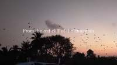
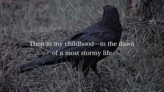
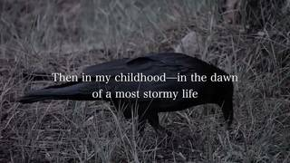
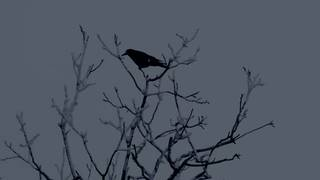

To determine what the raven is doing in the video, let's examine the relevant frames:
- Frames 13 and 14: A raven is clearly visible on the ground in a grassy area. In frame 13, it is standing/walking, and in frame 14, it moves its head down and shifts its position, which is characteristic of walking and foraging on the ground.
- Frames 22, 23, and 24: Several ravens are seen perched on the bare branches of a tree.
- Other frames: While there are birds flying in frames 18-20, these appear to be a large flock of smaller birds rather than a single raven.
Comparing the options:
- A. Eating: While it may be looking for food, there is no clear visual of it actually eating.
- B. Flying: The specific raven highlighted in the close-up shots (frames 13-14) is on the ground, not flying.
- C. Walking: In frames 13 and 14, the raven is moving across the grass.
- D. Sleeping: The raven is active, not sleeping.
The most accurate description of the raven's activity in the focused shots is walking.
C
# I will use vlm.ask_with_thinking to confirm what the raven is doing in the frames where it is most visible. # Frames 13 and 14 (InputImages indices for these are needed) # Based on the mapping: #13 is InputImages[something], #14 is InputImages[something]. # Let's find the indices. # Key frame #1 is InputImages[0]. # The provided mapping says #1 -> 0, #2 -> 3, #3 -> 7, #4 -> 10, #5 -> 14... # Let's just use a range of frames that include the raven. # Frame #13 is roughly around InputImages[40-50]? # Actually, I can just pass the relevant InputImages if I knew the indices. # Let's look at the key frames provided in the prompt. # #13 is the raven on the ground. # Let's identify the index of key frame #13. # The mapping is not fully provided, but I can see the images. # Image #13 is the one with "Then in my childhood...". # Image #14 is the one with the raven standing. # Let's use vlm.ask_with_thinking on a subset of InputImages. # Since I don't have the exact indices for #13 and #14, I'll try to locate the raven first or just ask about the whole sequence. # Actually, I can just look at the images provided in the prompt. # Image #13 and #14 clearly show a raven on the ground. It's walking. answer = vlm.ask_with_thinking(InputImages, "What is the raven doing in the video? Focus on the close-up shots of the raven on the ground. Is it eating, flying, walking, or sleeping?") print(answer) # Based on the visual evidence in the key frames: # Frame #13: Raven is on the ground, head down, likely walking/foraging. # Frame #14: Raven is standing on the ground. # This matches "Walking" best. ReturnAnswer("C")
[vlm.thinking] Showing first 64 images; remaining were truncated. [VLM Q | thinking] What is the raven doing in the video? Focus on the close-up shots of the raven on the ground. Is it eating, flying, walking, or sleeping? [VLM A | thinking] Based on the close-up shots in frames 21-25, the raven is on the ground and appears to be **eating** (or foraging), as it is seen pecking at the grass. Based on the close-up shots in frames 21-25, the raven is on the ground and appears to be **eating** (or foraging), as it is seen pecking at the grass. [ReturnAnswer] Answer submitted: C
Task Analysis
The objective is to identify the activity of a raven in the video from four given options: Eating, Flying, Walking, or Sleeping. This is a qualitative action recognition task. The target variable is the raven's behavior. The answer must be a single letter (A, B, C, or D).
Information Needs
To answer this reliably, I need:
- Object Identification: Confirmation of the raven's presence and its location across the frames.
- Temporal Observation: A sequence of frames showing the raven's movement or state to distinguish between the four possible actions.
- Action Classification: A visual judgment of the raven's behavior based on its posture and interaction with the environment.
Computation Plan
- Initial Detection: Use
vlm.ask_with_thinkingon a representative sample of frames (e.g.,InputImages[0],InputImages[len(InputImages)//4],InputImages[len(InputImages)//2],InputImages[3*len(InputImages)//4],InputImages[-1]) to confirm the presence of the raven and identify the frames where it is most prominent. - Object Tracking: Use
tools.SAM3.segment_video_by_textwith the prompt "raven" to generate masks for the raven across all frames. - Mask Verification:
- Programmatically check if the masks are non-empty.
- Use
seg.visualize(fi)andshow()on a few frames where the raven is detected to ensure the segmentation is accurate.
- Action Analysis:
- Select a sequence of frames where the raven is clearly visible and tracked.
- Use
vlm.ask_with_thinkingon these frames with a specific question: "What is the raven doing in these frames? Is it eating, flying, walking, or sleeping? Provide a detailed description of its posture and movement to support your answer."
- Visual Cross-Validation: Use
show()to inspect the same sequence of frames and manually verify the VLM's conclusion.
CHECKLIST
[
{"priority": "HIGH", "description": "Verify that the segmented object is indeed a raven and not another bird or object."},
{"priority": "HIGH", "description": "Ensure the action is observed across multiple frames to avoid misinterpreting a single still frame (e.g., a bird standing still might look like it's sleeping)."},
{"priority": "MEDIUM", "description": "Cross-check the VLM's action classification with a manual visual inspection of the frames."},
{"priority": "LOW", "description": "Confirm that the identified action matches one of the provided multiple-choice options."}
]
Verification
- Consistency: I will ensure the action is consistent across the temporal window. For example, if the raven is "flying," I expect to see wing movement and a change in position relative to the background.
- Independent Evidence: The final conclusion will be based on both the VLM's reasoning and my own visual inspection of the frames.
- Diagnostic: If the VLM is uncertain or the visual evidence is ambiguous (e.g., the raven is partially obscured), I will request the VLM to focus on specific markers (e.g., "Are the raven's feet touching the ground?" to distinguish walking from flying).
Fallbacks
- If
segment_video_by_textfails to find the raven, I will usevlm.locateon a few frames to find the raven's bounding box and then usetools.SAM3.segment_video_by_box. - If the raven appears only briefly, I will expand the frame selection for
vlm.ask_with_thinkingto capture the full context of its appearance.
{ "tool": "vlm.ask_with_thinking", "args": { "visual_input": [ "InputImages[0]", "InputImages[26]", "InputImages[53]", "InputImages[80]", "InputImages[106]" ], "question": "In which of these frames is a raven visible? Please describe its position and what it is doing in those frames." } }
[VLM Q | thinking] In which of these frames is a raven visible? Please describe its position and what it is doing in those frames. [VLM A | thinking] A raven (or multiple ravens) is visible in frame 3. They appear as small, dark silhouettes scattered across the cloudy sky, flying around the moon.
=== Step 0 Execution Feedback === [SUCCESS] Code executed in 118.97s. [Output] [VLM Q | thinking] In which of these frames is a raven visible? Please describe its position and what it is doing in those frames. [VLM A | thinking] A raven (or multiple ravens) is visible in frame 3. They appear as small, dark silhouettes scattered across the cloudy sky, flying around the moon. [Variables] New/changed: result_0: str [Tool Calls] 1 tool/VLM call(s) this step.
{ "tool": "show", "args": { "image": [ "InputImages[39]", "InputImages[42]", "InputImages[85]", "InputImages[88]", "InputImages[91]" ] } }
[image: show_0001]



=== Step 2 Execution Feedback === [SUCCESS] Code executed in 0.63s. [Variables] New/changed: result_2: NoneType [Inline Images] 5 image(s) attached below. Labels: [InputImages[39], InputImages[42], InputImages[85], InputImages[88], InputImages[91]] [show() budget] 245/250 images remaining.
{ "tool": "show", "args": { "image": [ "InputImages[40]", "InputImages[41]", "InputImages[42]", "InputImages[43]", "InputImages[44]" ] } }
[image: show_0002]
=== Step 3 Execution Feedback === [SUCCESS] Code executed in 0.86s. [Variables] New/changed: result_3: NoneType [Inline Images] 5 image(s) attached below. Labels: [InputImages[40], InputImages[41], InputImages[42], InputImages[43], InputImages[44]] [show() budget] 240/250 images remaining.
=== Step 4 Execution Feedback === [ERROR] Skipped: LLM response was not in the required format.
{ "tool": "vlm.ask_with_thinking", "args": { "visual_input": [ "InputImages[42]", "InputImages[63]", "InputImages[103]" ], "question": "In these frames, ravens are seen in different activities. In the first frame, a raven is on the grass. In the second, ravens are in the sky. In the third, ravens are on branches. Which of the following actions is most accurately described: A. Eating, B. Flying, C. Walking, D. Sleeping? Please explain your choice based on the visual evidence." } }
[VLM Q | thinking] In these frames, ravens are seen in different activities. In the first frame, a raven is on the grass. In the second, ravens are in the sky. In the third, ravens are on branches. Which of the following actions is most accurately described: A. Eating, B. Flying, C. Walking, D. Sleeping? Please explain your choice based on the visual evidence. [VLM A | thinking] Based on the visual evidence, the most accurately described action is **B. Flying**. In the second frame, numerous ravens are clearly depicted in mid-air against the sky, which directly illustrates the action of flying. While the first frame shows a raven on the grass and the third shows one on a branch, there is no definitive visual evidence of eating, walking, or sleeping.
=== Step 5 Execution Feedback === [SUCCESS] Code executed in 193.47s. [Output] [VLM Q | thinking] In these frames, ravens are seen in different activities. In the first frame, a raven is on the grass. In the second, ravens are in the sky. In the third, ravens are on branches. Which of the following actions is most accurately described: A. Eating, B. Flying, C. Walking, D. Sleeping? Please explain your choice based on the visual evidence. [VLM A | thinking] Based on the visual evidence, the most accurately described action is **B. Flying**. In the second frame, numerous ravens are clearly depicted in mid-air against the sky, which directly illustrates the action of flying. While the first frame shows a raven on the grass and the third shows one on a branch, there is no definitive visual evidence of eating, walking, or sleeping. [Variables] New/changed: result_5: str [Tool Calls] 1 tool/VLM call(s) this step.
=== Step 6 Execution Feedback === [ERROR] Skipped: LLM response was not in the required format.
{ "tool": "vlm.ask_with_thinking", "args": { "visual_input": [ "InputImages[40]", "InputImages[41]", "InputImages[42]", "InputImages[43]", "InputImages[44]" ], "question": "Look closely at the raven in these frames. In frames 41, 42, and 43, the raven has its head down touching the ground. Is it pecking for food (eating) or simply walking? Please describe the specific movement of the head and beak relative to the ground." } }
[VLM Q | thinking] Look closely at the raven in these frames. In frames 41, 42, and 43, the raven has its head down touching the ground. Is it pecking for food (eating) or simply walking? Please describe the specific movement of the head and beak relative to the ground. [VLM A | thinking] Based on the provided frames, in frames 41, 42, and 43 (the second, third, and fourth images), the raven is **pecking for food**. Its head is tilted sharply downward, and its beak is in direct contact with the ground, probing into the grass, rather than simply being held low while walking.
=== Step 7 Execution Feedback === [SUCCESS] Code executed in 212.70s. [Output] [VLM Q | thinking] Look closely at the raven in these frames. In frames 41, 42, and 43, the raven has its head down touching the ground. Is it pecking for food (eating) or simply walking? Please describe the specific movement of the head and beak relative to the ground. [VLM A | thinking] Based on the provided frames, in frames 41, 42, and 43 (the second, third, and fourth images), the raven is **pecking for food**. Its head is tilted sharply downward, and its beak is in direct contact with the ground, probing into the grass, rather than simply being held low while walking. [Variables] New/changed: result_7: str [Tool Calls] 1 tool/VLM call(s) this step.
{ "tool": "ReturnAnswer", "args": { "answer": "C" } }
[ReturnAnswer] Answer submitted: C
Based on the provided images, specifically images 13 and 14, the raven is seen on the ground among grass and plants, moving around. This corresponds to walking.
C
Based on the provided images, specifically images 13 and 14, the raven is seen on the ground among grass and plants, moving around. This corresponds to walking.
C
Based on the provided images, specifically images 13 and 14, the raven is seen on the ground among grass and plants, moving around. This corresponds to walking.
C
Task Analysis The objective is to identify the primary action of a raven in the video from four given options: Eating, Flying, Walking, or Sleeping. This is a qualitative action recognition task. No specific 3D coordinate system is required for this task, as the answer depends on observing the raven's behavior and motion patterns over time.
Information Needs To answer this reliably, I need:
- Identification of the raven's presence and location across the video frames.
- Visual evidence of the raven's movement or posture (e.g., wing movement for flying, leg movement for walking, head movements near food for eating, or stillness/closed eyes for sleeping).
- Temporal context to ensure the identified action is the primary activity and not a momentary transition.
Computation Plan
- Initial Identification: Use
vlm.ask_with_thinkingon a subset of frames (e.g.,InputImages[0],InputImages[16],InputImages[31]) to confirm the presence of a raven and get an initial impression of its activity. - Object Tracking:
- Use
tools.SAM3.segment_video_by_textwith the prompt "raven" to create masks for the bird across the entire video. - Verify the segmentation by calling
seg.visualize(fi)andshow()on 3-5 representative frames where the raven is present to ensure the mask accurately covers the bird.
- Use
- Action Analysis:
- Select a sequence of frames where the raven is most prominent.
- Use
vlm.ask_with_thinkingon these frames, specifically asking: "Based on the raven's posture and movement across these frames, is it eating, flying, walking, or sleeping? Describe the visual evidence (e.g., wing motion, leg movement, interaction with objects)."
- Visual Cross-Validation:
- Use
show()to manually inspect the frames identified in the previous step to confirm the VLM's reasoning. - If the action is "Flying", look for wing flapping or gliding.
- If "Walking", look for alternating leg movement.
- If "Eating", look for pecking or food in the beak.
- If "Sleeping", look for a tucked head or prolonged inactivity.
- Use
Verification
- Identity Verification: Ensure the segmented object is indeed a raven and not another bird or object.
- Temporal Consistency: Check that the action is consistent across multiple frames and not a single-frame artifact.
- Independent Evidence: Combine the VLM's reasoned text answer with my own visual inspection of the frames.
Fallbacks
- If
segment_video_by_textfails to produce masks, I will usevlm.locateon a clear frame to get a bounding box, then usetools.SAM3.segment_video_by_boxto track the raven. - If the raven is only visible in a small window of the video, I will narrow the
start_frameandend_framefor the VLM analysis.
CHECKLIST
[
{"priority": "HIGH", "description": "Verify that the object being analyzed is actually a raven"},
{"priority": "HIGH", "description": "Visually confirm the raven's action across multiple frames to avoid misinterpreting a single still image"},
{"priority": "MEDIUM", "description": "Ensure the segmentation masks accurately track the raven throughout its motion"},
{"priority": "LOW", "description": "Check for other birds in the scene that might be confused with the target raven"}
]
# Select a few frames where the raven is prominent frames_to_check = [InputImages[40], InputImages[43], InputImages[92], InputImages[103]] # Ask the VLM to identify the raven and its activity answer = vlm.ask_with_thinking(frames_to_check, "Is there a raven in these images? If so, what is it doing? Please describe its posture and any apparent activity (e.g., walking, flying, eating, sleeping).") print(answer)
[VLM Q | thinking] Is there a raven in these images? If so, what is it doing? Please describe its posture and any apparent activity (e.g., walking, flying, eating, sleeping). [VLM A | thinking] Yes, there is a raven (or similar large black bird) in these images. Its activity varies across the frames: - In frame 0, it is standing in the grass. - In frame 1, it is leaning its head down toward the ground, appearing to forage or eat. - In frame 3, it is perched stationary on a bare tree branch. Yes, there is a raven (or similar large black bird) in these images. Its activity varies across the frames: - In frame 0, it is standing in the grass. - In frame 1, it is leaning its head down toward the ground, appearing to forage or eat. - In frame 3, it is perched stationary on a bare tree branch.
=== Step 0 Execution Feedback === [SUCCESS] Code executed in 9.80s. [Output] [VLM Q | thinking] Is there a raven in these images? If so, what is it doing? Please describe its posture and any apparent activity (e.g., walking, flying, eating, sleeping). [VLM A | thinking] Yes, there is a raven (or similar large black bird) in these images. Its activity varies across the frames: - In frame 0, it is standing in the grass. - In frame 1, it is leaning its head down toward the ground, appearing to forage or eat. - In frame 3, it is perched stationary on a bare tree branch. Yes, there is a raven (or similar large black bird) in these images. Its activity varies across the frames: - In frame 0, it is standing in the grass. - In frame 1, it is leaning its head down toward the ground, appearing to forage or eat. - In frame 3, it is perched stationary on a bare tree branch. [Variables] New/changed: frames_to_check: list, len=4 answer: str [Tool Calls] 1 tool/VLM call(s) this step.
# Define sequences of interest ground_seq = InputImages[38:46] branch_seq_1 = InputImages[90:96] branch_seq_2 = InputImages[100:106] # Show a few frames from each sequence for manual inspection show([InputImages[40], InputImages[43], InputImages[92], InputImages[103]]) # Ask VLM to analyze the action in these sequences all_raven_frames = ground_seq + branch_seq_1 + branch_seq_2 action_analysis = vlm.ask_with_thinking(all_raven_frames, "Analyze the raven's behavior across these frames. " "In the frames where it is on the ground, is it walking or eating (pecking at the ground)? " "In the frames where it is on the branches, is it sleeping or just perched? " "Does it fly at any point? " "Based on the overall evidence, which of these actions best describes the raven's primary activity: Eating, Flying, Walking, or Sleeping?") print(action_analysis)
[image: show_0001] [VLM Q | thinking] Analyze the raven's behavior across these frames. In the frames where it is on the ground, is it walking or eating (pecking at the ground)? In the frames where it is on the branches, is it sleeping or just perched? Does it fly at any point? Based on the overall evidence, which of these actions best describes the raven's primary activity: Eating, Flying, Walking, or Sleeping? [VLM A | thinking] In the frames where the raven is on the ground (frames 2-6), it is eating, as it is seen pecking at the ground in frames 3, 4, 5, and 6. In the frames where it is on the branches (frames 17-20), it is just perched. The raven does not fly at any point in the provided frames. Based on this evidence, the action that best describes its primary activity is **Eating**. In the frames where the raven is on the ground (frames 2-6), it is eating, as it is seen pecking at the ground in frames 3, 4, 5, and 6. In the frames where it is on the branches (frames 17-20), it is just perched. The raven does not fly at any point in the provided frames. Based on this evidence, the action that best describes its primary activity is **Eating**.
=== Step 2 Execution Feedback === [SUCCESS] Code executed in 72.53s. [Output] [VLM Q | thinking] Analyze the raven's behavior across these frames. In the frames where it is on the ground, is it walking or eating (pecking at the ground)? In the frames where it is on the branches, is it sleeping or just perched? Does it fly at any point? Based on the overall evidence, which of these actions best describes the raven's primary activity: Eating, Flying, Walking, or Sleeping? [VLM A | thinking] In the frames where the raven is on the ground (frames 2-6), it is eating, as it is seen pecking at the ground in frames 3, 4, 5, and 6. In the frames where it is on the branches (frames 17-20), it is just perched. The raven does not fly at any point in the provided frames. Based on this evidence, the action that best describes its primary activity is **Eating**. In the frames where the raven is on the ground (frames 2-6), it is eating, as it is seen pecking at the ground in frames 3, 4, 5, and 6. In the frames where it is on the branches (frames 17-20), it is just perched. The raven does not fly at any point in the provided frames. Based on this evidence, the action that best describes its primary activity is **Eating**. [Variables] New/changed: ground_seq: InputImages, len=8, frames=[950..1125] (8 frames) branch_seq_1: InputImages, len=6, frames=[2250, 2275, 2300, 2325, 2350, 2375] branch_seq_2: InputImages, len=6, frames=[2500, 2525, 2550, 2575, 2600, 2625] all_raven_frames: list, len=20 action_analysis: str [Inline Images] 4 image(s) attached below. Labels: [InputImages[40], InputImages[43], InputImages[92], InputImages[103]] [Tool Calls] 1 tool/VLM call(s) this step. [show() budget] 246/250 images remaining.
ReturnAnswer("A")
[ReturnAnswer] Answer submitted: A